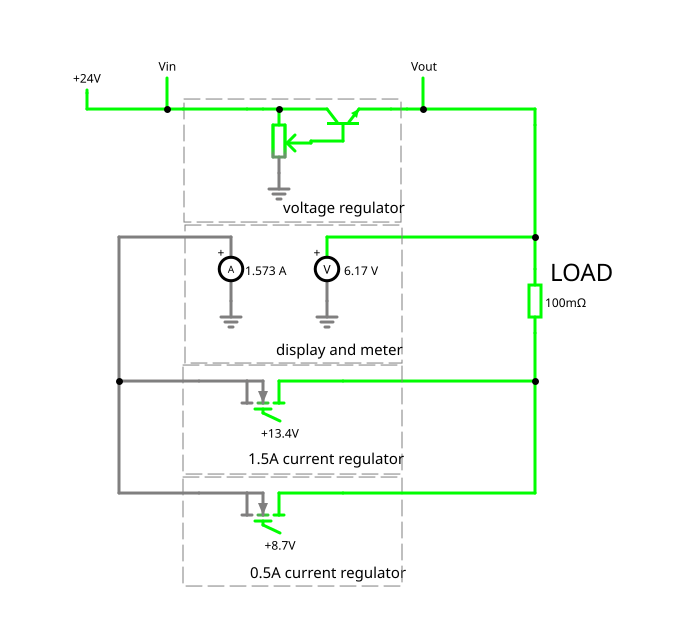
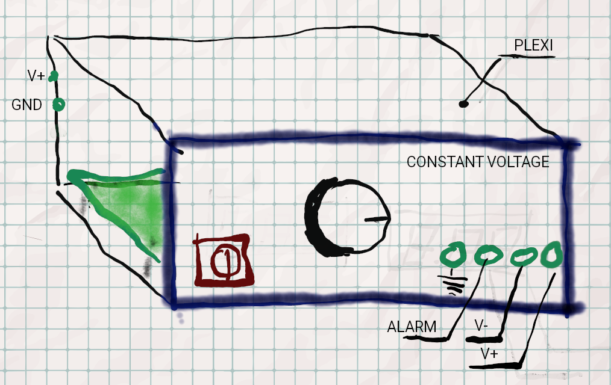
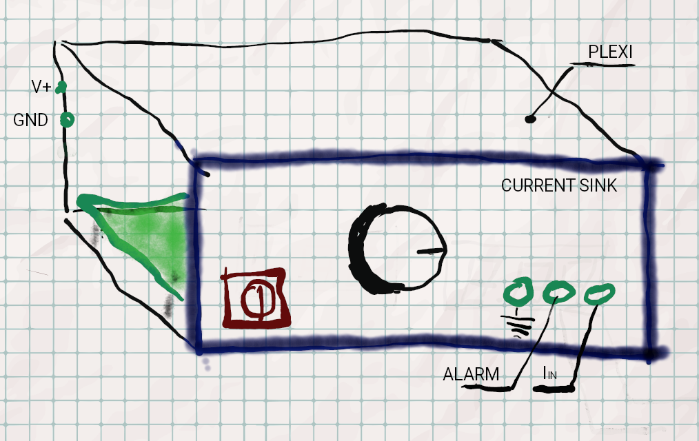
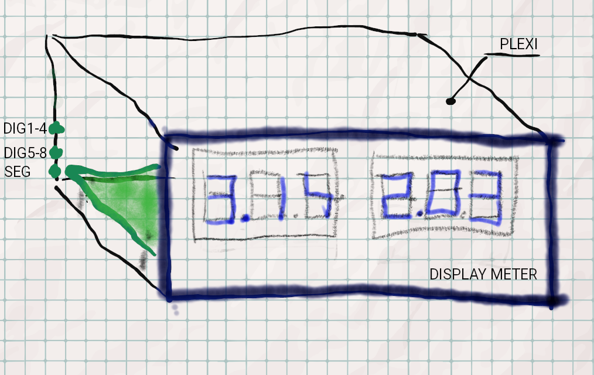
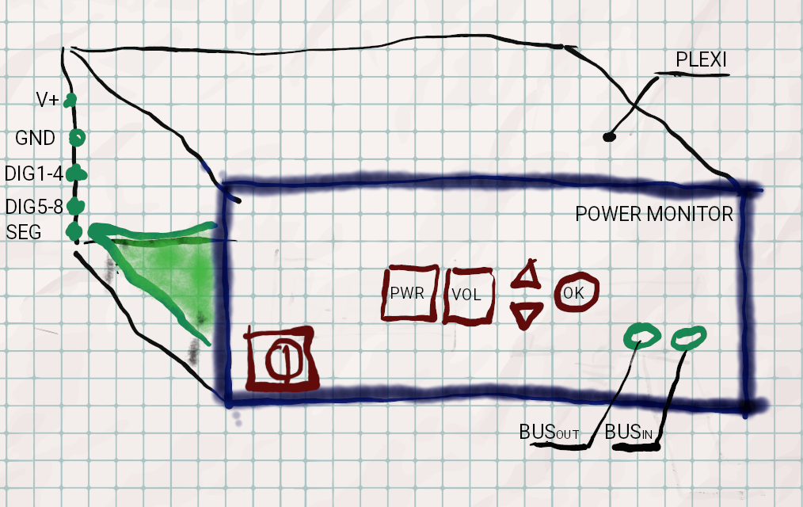
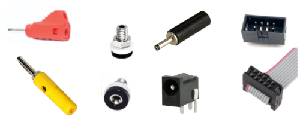

Code
displayformat include_comment trueAfter spending some time playing with electronics, you’ll eventually realise that you need a bench power supply for your projects. I did. Sure, you can buy a ready-made solution from AliExpress, or a sophisticated piece of equipment from Tektronix (no affiliation here), if you happen to be a millionaire. But where’s the fun in that? So, here’s what I came up with.
What we need is adjustable voltage and current control, a display showing the settings and actual current consumption… and maybe more. We’ll see.
The motto of this project is:
What is missing (but will probably happen someday)
displayformat include_comment truePower is the main parameter and will be our primary limiting factor. It basically defines everything: size, cost, component selection and, most importantly, the extent of the damage if something goes wrong.
But to make the bench supply useful and versatile, we need a reasonable amount of power.
One of potential application is battery charging. To make it useful, let’s settle on 24 V and 1.5 A, giving us 36 W. This will be our starting point. Since the AC/DC converter is not part of the current scope, 36 W gives us a wide range of reasonably priced off-the-shelf options.
For electric scooter enthusiasts, a more interesting option would be 36 V and approximately 2 A. However, this introduces another level of complexity for the AC/DC adapter, power dissipation and control module. Theoretically, it might be possible with an additional voltage regulator, a more powerful power supply and a bit of luck… but not this time.
Here are some examples, assuming a relatively conservative charging rate of 0.2 C:
# standard 18650 cell
V = 3.7 #V
C = 3.4 #Ah
I = 0.2*C #A
P=V * I #W
#
# battery for power tools
V = 20 #V
C = 3 #Ah
I = 0.2*C #A
P=V * I #W
#
# power bank
V = 5 #V
I = 3 #A
P = V * I #W
#
# battery for electric scooter
V = 36 #V
C = 7.8 #Ah
I = 0.2*C #A
P=V * I #W# standard 18650 cellV = 3.7000 #VC = 3.4000 #AhI = 0.6800 #AP = 2.5160 #W
# battery for power toolsV = 20 #VC = 3 #AhI = 0.6000 #AP = 12.000 #W
# power bankV = 5 #VI = 3 #AP = 15 #W
# battery for electric scooterV = 36 #VC = 7.8000 #AhI = 1.5600 #AP = 56.160 #WThe entire bench supply will consist of independent modules. You don’t need to build everything: simply choose the modules that make the most sense for your application, with the option of adding more later.
All modules will share the same enclosure design, with only the internal electronics changing.
Connections between modules will be standardised and based on 2 mm mini banana plugs.
Since we’re dealing with relatively high power levels, every module will include thermal protection.

A regulated voltage supply module. It will also provide a negative voltage output, so from this point onwards you can experiment with op-amps without needing an additional power supply.

Using a single module to cover the entire range from 0 A to 2 A or more would require compromising between fine regulation at low currents and the risk of burning a chip at higher currents.
We don’t want either.
So, let’s split the range: - 1.5 A module: for rough regulation, capable of handling up to 80 W when cooled with liquid nitrogen and approximately 30 W with good fan cooling (fingers crossed!). - 0.5 A module: for fine regulation, with a lower power-handling capability.
Of course, modules can be connected in parallel to achieve higher currents.
Each module will include thermal protection and an alarm input to switch it off…just in case.

Two LED displays for voltage and current. No controls here, just a dedicated display unit.
The module requires a digit selection signal for each of the eight digits, along with a segment selection signal. The display is multiplexed: the controller scans through the digits sequentially and selects the appropriate segments for each one.
Control signals are provided by the power monitor.
Each LED display can also operate independently, offering some additional flexibility. I’m not entirely sure what the use case would be yet, but hey, you’ve got the power!

Measures voltage and current on the high side of the circuit and generates the control signals for the LED displays.
It also allows you to set voltage or power limits, triggering an alarm when the selected threshold is exceeded. This provides additional protection for the voltage and current modules, alongside their individual thermal protection.
The measurement circuit is based on the INA230 chip from Texas Instruments© (alternatively, the INA226 can be used for higher measurement precision).

